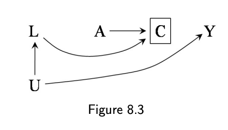

Consequences of loss to follow-up
One problem cohort studies often face is loss to follow up. And often times the processes that give rise to participation in the cohort in the first place are also the processes that keep participants in the study. So, like we see in other cohort studies, our study tends to skew toward whiter, more educated, and more affluent families. And although I haven’t seen a lot of the data, I imagine that those who remain in the study tend to skew that way too. How does this impact my study?

Let’s look at this figure, which can be found in @hernán. If we imagine that U is having low income. Low income may mean less time to complete surveys, which means censoring. People with low income are also at high risk of Covid. There will be bias because we have conditioned on C, i.e. we are only looking at participants who remained in the study.
The nice thing about time to event analyses is that participants who contribute data to the study but drop out are still considered in all of the analyses. But they are considered MAR, or missing at random, which means that the missingness is unrelated to any of the variables in the dataset.
When we know that’s not true, we’ll have to look at other tools. In the book Hernán and Robins (n.d.), he mentions using inverse probability of censoring weighting to account for selection bias. Essentially, you upweight participants who, based on their propensity to drop out, are more likely to drop out. Given the assumptions of exchangeability, this participant is used to represent participants like them that would have actually dropped out.
In the parametric g-formula, there are also ways, which I am still learning about. But essentially what it involves is simulating outcomes beyond the time that they were actually censored. Basically, you simulate data as though they had not been censored.